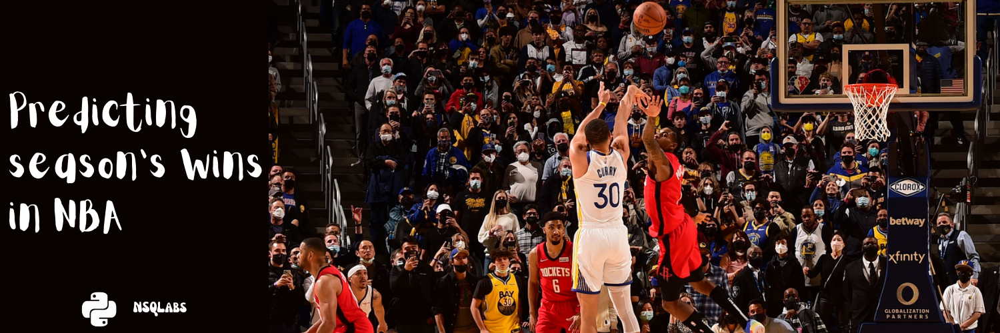

Predicting season's wins in NBA
Motivation of the project.

In this project, we'll be looking at a variety of factors that may influence a team's win total in an NBA season. We'll be using data from previous seasons (32 years of NBA for being exact) to see if we can build a model that accurately predicts a team's season win total. Some of the questions we'll be looking to answer are:
- What are the most important factors in determining how many games an NBA team will win in a season?
- Can we predict how many games a team will win in a season based on statistics from previous seasons?
- What datasets would be most useful in constructing a model to predict a team's season win total?
By the end of this project, we should have a good understanding of which factors are most important in determining a team's season win tota by developing multiple models that predicts a team’s win totals based on various data sets.
This is a learning project that involves many important aspects of a real life data science project:
- Gathering data from external sources.
- Preparing that data and storing it through multiple stages.
- Making an exploratory data analysis and gathering relevant insights useful for models development.
- Evaluating and comparing (with the same metrics) multiple models (and algorithms) trained with different features to figure out which dataset can providfe us multiple insights.
- Improving these models.
- Documenting the whole process and thinking in project reusability and adding an action for making automatic builds.
- Operationalizing the project through an API and a webpage.
The problem to solve
Formal Definition
Tom Mitchell’s machine learning formalism looks like this: A computer program is said to learn from experience E with respect to some class of tasks T and performance measure P, if its performance at tasks in T, as measured by P, improves with experience E.``
- Task (T): Predict the number of wins a team will have based on statistics.
- Experience (E): Multiple datasets of basic and advanced stats summarizd for a team's whole season.
- Performance (P): R^2 score to evaluate how much of the data variation is explained by these set of features.
Informal Definition
Describe the problem as though you were describing it to a friend or colleague. This can provide a great starting point for highlighting areas that you might need to fill. It also provides the basis for a one sentence description you can use to share your understanding of the problem.
I want to find the best set of predictors by team season
Assumptions
- We are not only the perfect model but learning how to apply multiple linear regression. In the future, an extension of this project might use other algorithms to predict with more accuracy if needed.
- We are not counting on data game by game which might add an extra level of detail to our model and conclusions so the expected outcome is a summary of the ideal season base on 3 or 4 predictors and then getting an average per game.
- There are differences in the number of matches per season across seasons which might affect the performance (this is an assumption that needs to be tested against data).
Similar problems
This regression problem can be applied to many other situations where the goal is to predict a numerical value. For example, an analyst might want to know how the movement of the stock market affects the price of ExxonMobil (XOM) stock. In this case, the linear equation would have the value of the S&P 500 index as the independent variable (or predictor) and the price of XOM as the dependent variable.
There are a number of factors that affect the outcome of an event - not just one. For example, the price movement of ExxonMobil depends on more than just the performance of the overall market. Other predictors, such as the price of oil, interest rates, and the price movement of oil futures can affect the price of XOM and stock prices of other oil companies. To understand a complex relationship like this, multiple linear regression is used.
Multiple linear regression (MLR) is a statistical technique that can be used to figure out the relationships between multiple random variables. In other words, MLR examines how multiple independent variables are related to one dependent variable. Once each of the independent factors has been determined to predict the dependent variable, the information on the multiple variables can be used to create an accurate prediction on the level of effect they have on the outcome variable. The model creates a relationship in the form of a straight line (linear) that best approximates all the individual data points.
Usage
Project layout
├── LICENSE
├── Makefile <- Makefile with commands like `make data` or `make train`
├── README.md <- The top-level README for developers using this project.
├── data
│ ├── external <- Data from third party sources.
│ ├── interim <- Intermediate data that has been transformed.
│ ├── processed <- The final, canonical data sets for modeling.
│ └── raw <- The original, immutable data dump.
│
├── docs <- Documentation of the project
│
├── models <- Trained and serialized models, model predictions, or model summaries
│
├── notebooks <- Jupyter notebooks.
│
├── references <- Data dictionaries, manuals, and all other explanatory materials.
│
├── reports <- Generated analysis as HTML, PDF, LaTeX, etc.
│ ├── figures <- Generated graphics and figures to be used in reporting
│ └── tables <- Samples of data for documentation purposes.
│
├── requirements.txt <- The requirements file for reproducing the analysis environment, e.g.
│ generated with `pip freeze > requirements.txt`
│
├── setup.py <- makes project pip installable (pip install -e .) so src can be imported
├── src <- Source code for use in this project.
│ │
│ ├── data <- Scripts to download or generate data
│ │
│ ├── features <- Scripts to turn raw data into features for modeling
│ │
│ ├── models <- Scripts to train models and then use trained models to make predictions
│ │
│ └── visualization <- Scripts to create exploratory and results oriented visualizations
│
└── tox.ini <- tox file with settings for running tox; see tox.readthedocs.io